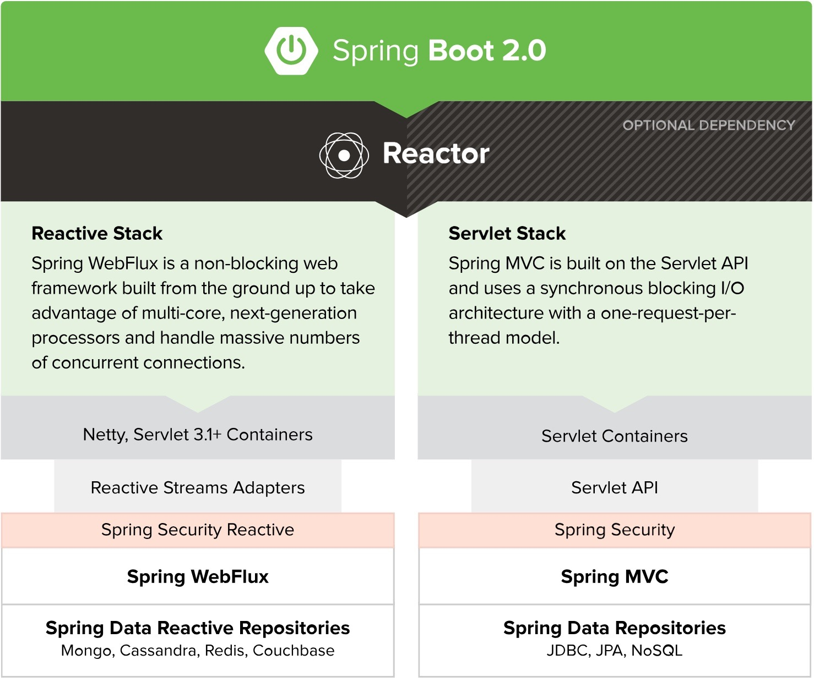
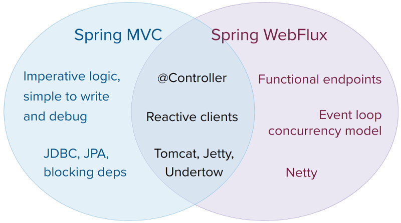
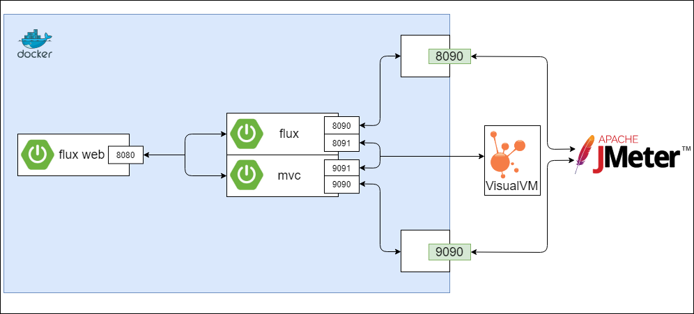
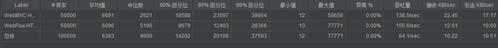
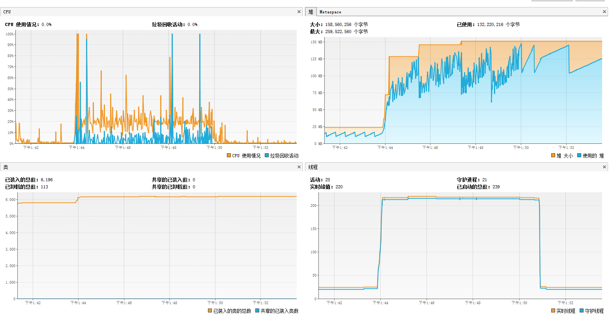
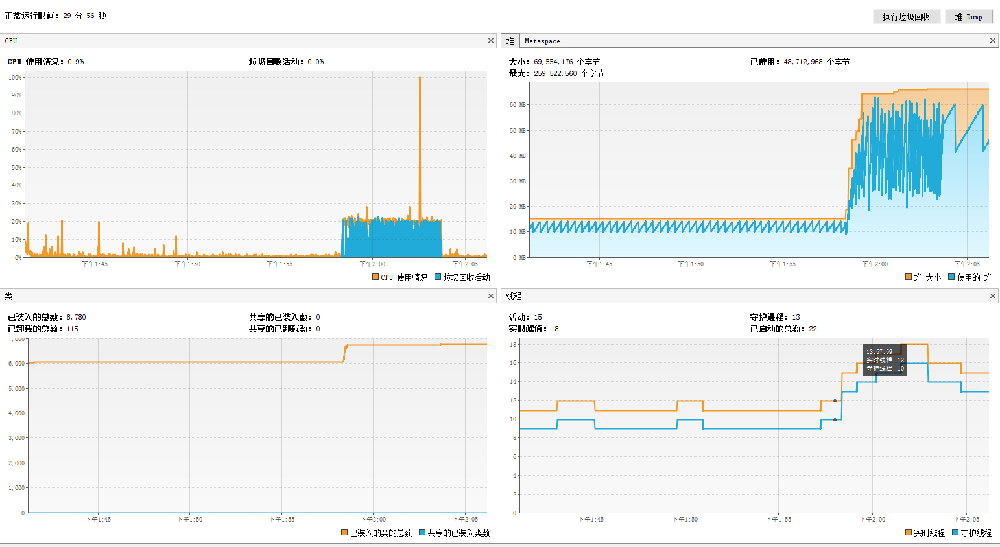
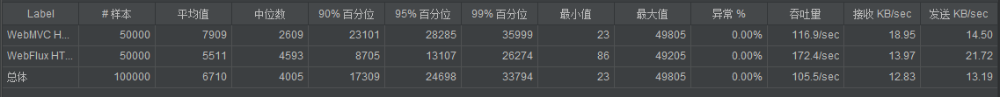

前言
最近工作有个小项目，其场景主要是封装内部的接口请求，然后做个转换之后，就请求外部请求，之后再 将外部响应转换成内部的统一格式，其实有点类似一个简单网关的应用，虽然也有一些业务逻辑在里面， 但是主要场景还是请求的转发处理，是一个 IO 密集型的应用，而且外部请求的延迟相对比较大而且不可控。 我想，这不正合适 Spring 5 出来的那个新特性的一个应用场景么。于是决定探究下 Spring Web on Reactive Stack: Spring WebFlux.
Spring WebFlux
Spring WebFlux 作为一个响应式(reactive-stack) web 框架补充，在 5.0 的版本开始加入到 Spring 全家桶。这是一个完全非阻塞的，支持 Reactive Streams, 运行在诸如 Netty, Undertow, 以及 Servlet 3.1+ 容器上的。Spring WebFlux 可以让你使用更少的线程去处理并发请求，同时能够让你使用更少的硬件资源来拓展 你的应用。

Spring MVC or WebFlux?
WebFlux 并不是 Spring MVC 替代，它主要应用还是在异步非阻塞编程模型上。如果你的项目并不是该模型 或者你的应用目前本身已经足够应付当前情况，是不需要去切换成 WebFlux 的。官方在这个选择上也有给出 几条注意点：

- WebFlux 目前还不支持 MySQL
- WebFlux 默认情况下使用 Netty 作为服务器
- MVC 能满足场景的就进来使用 Spring MVC，因为 WebFlux 编码更为复杂
- 从小应用开始，找到合适的场景，测试验证后逐步尝试
压测
整体了解下来，我这个应用还是符合这场景的，新应用，足够小，是个 IO 密集型的应用。于是我决定做个 简单的严策来验证下我这个场景使用 Spring MVC 和 使用 Spring WebFlux 分别会是一个怎么样的 表现。
构建的服务
- 模拟外部的接口服务的应用(使用 Spring WebFlux): web
- 模拟需要构建的新应用(使用 Spring MVC): mvc
- 模拟需要构建的新应用(使用 Spring WebFlux): flux
所有服务都是跑在本地 docker 环境，限制使用相同的 cpu 和内存(1g)资源。同时添加对应的 JMX 监控。

服务提供的接口
web: 提供一个可自定义延迟的简单接口
1
2
3
4(value = "/hello/{times}")
public Mono<String> hello(@PathVariable int times) {
return Mono.delay(Duration.ofMillis(times)).thenReturn("Hello");
}mvc: 请求 web 服务的接口
1
2
3
4(value = "/block/{times}")
public String block(@PathVariable int times) {
return restTemplate.getForObject(url + "/hello/" + times, String.class);
}flux: 请求 web 服务的接口
1
2
3
4
5
6(value = "/reactor/{times}")
public Mono<String> reactor(@PathVariable int times) {
return Mono.just(times)
.flatMap(t -> client.get()
.uri(url + "/hello/" + times).retrieve().bodyToMono(String.class));
}
结果对比
这边主要对比了两种不同网络延时的一个情况：10ms、20ms。都是使用的 1000 线程数，5s 的 ramp-up 时间，循环 50 次。 其相应的吞吐量和资源使用情况对比如下。
延迟 10ms
吞吐量

资源使用情况
mvc

flux

延迟 20ms
吞吐量

从压测结果来看，如果是 IO 密集型的应用，使用 WebFlux 和使用 MVC 对于吞吐量的影响不大，但是 使用了 WebFlux 的应用，其整体响应时间更短，启动的线程数更少，使用的内存资源更少。同时，延迟越大， WebFlux 的优势越明显。
上述的完整压测代码可以再 这儿 找到。